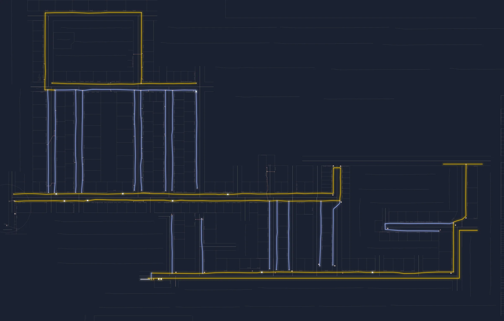
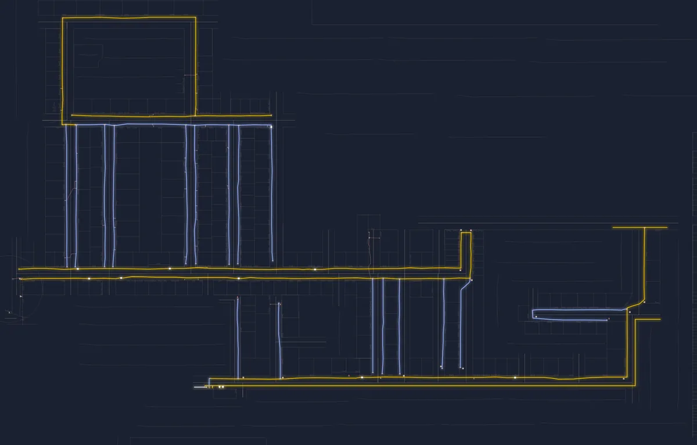
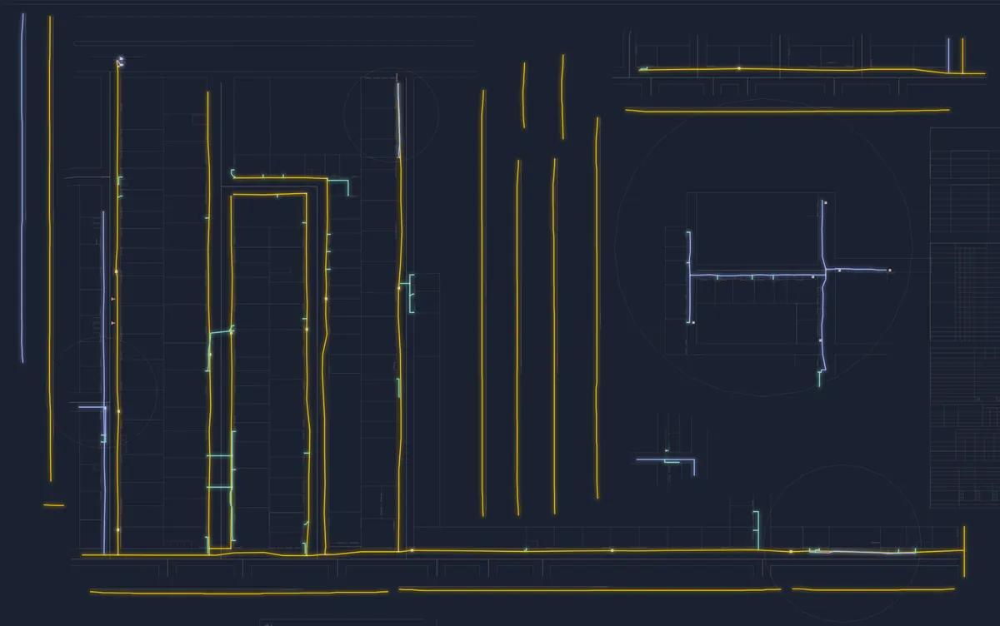
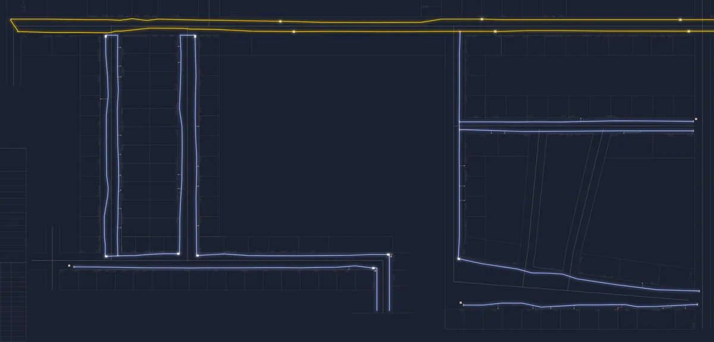
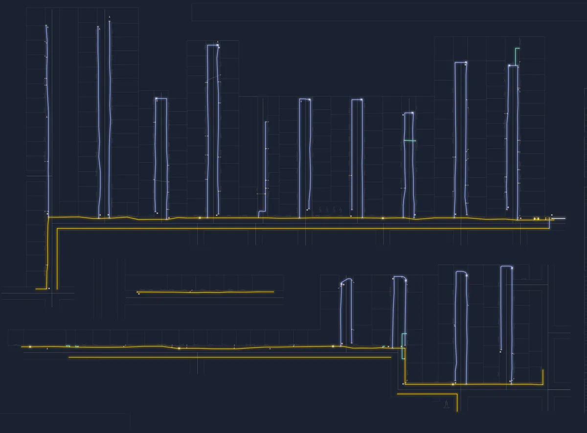
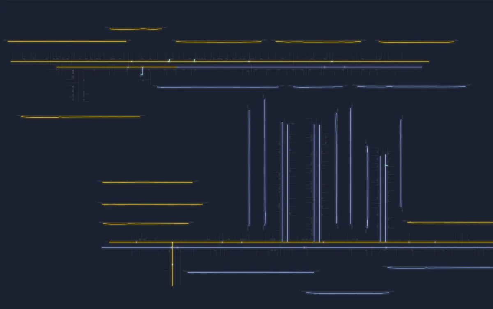
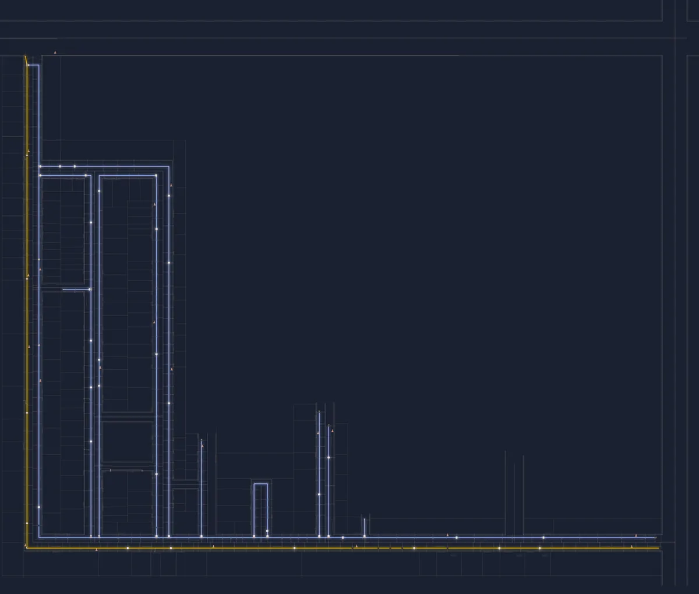

It starts in a trench.
A Ø63 MDPE gas main, laid along a service road in Mohan Colony, Dholpur.
Then it runs down every lane.
Ø32 laterals branch off the main toward each row of houses.
Once it's buried, nobody can see it.
So every run, every fitting and every metre has to be drawn.
Every metre of gas pipe,drawn where it lies.
BKS Infralink makes as-built drawings and route plans for city gas distribution networks.
Gas companies win contracts to pipe a colony, a ward or a whole city. Before the digging, someone has to plan how many metres it will take. After it, someone has to prove exactly where every metre went. That is our work.
- Ø20–125MDPE pipe sizes we draw
- 1:100standard sheet scale
- DWG + PDFlayered CAD and print-ready sheets
- Dholpurbased, working across Rajasthan
What we draw
From the first route plan for a tender to the last as-built your client signs.
As-built drawings
The final record of what went into the ground, drawn to the format your client signs off.
- MDPE / PE as-built sheets at 1:100
- Pipe size, depth, offsets and method of laying for every run
- Valves, tees, transition fittings, test points and service tees
- Title block, legend and material table in your client's format
Route plans and length estimates
Before the tender: how much pipe an area needs and where it should go.
- Street-by-street route layout for a colony or ward
- Pipe length by diameter for estimating and BOQ
- Crossings that need HDD or boring, flagged early
- Phasing so crews can work one area at a time
HDD and crossing records
Bores under roads, drains and railway land, documented so they can be found again.
- Entry and exit pits with GPS coordinates
- Bore length and pipe size for each crossing
- Job numbers matched to your site records
PNG connection records
Every household connection tied back to the network it hangs off.
- Service line and riser positions
- GC length and connection numbers on the plan
- House-wise schedules on request
Material and length reconciliation
Drawn lengths checked against what was issued and billed.
- MP and LP stream lengths by diameter
- Open-cut, boring and HDD split
- Geometry length tables ready for measurement sheets
Digitising old drawings
Paper sheets and PDFs turned into clean, layered AutoCAD files.
- PDF and scan to DWG
- Building and road base layers redrawn
- Layer standards applied so files merge cleanly
Recent sheets
Redrawn from our CAD files. Yellow is Ø63, blue is Ø32, green is Ø20. Names and house numbers removed.






How a job runs
Most colonies take one to three weeks from survey to approved sheets.
Walk the area
We survey the streets, plots and existing services, and take GPS fixes at pits, valves and crossings.
Draw it in CAD
Every run goes onto a layered AutoCAD sheet, by diameter, with offsets from building lines.
Reconcile the metres
Drawn lengths are checked against site measurements, material issued and the method of laying.
Hand over for approval
You get DWG and PDF sheets ready for TPIA review and client sign-off, and we revise them until they pass.
Who we draw for
Anyone who has to account for pipe in the ground on a city gas distribution project.
Laying contractors
You won the PE laying work. We draw the as-builts your client needs before they release the bill.
City gas companies
You hold the geographical area. We plan routes, estimate lengths and keep the network record current as it grows.
Inspection agencies
You check the work. Our sheets carry the lengths, methods and coordinates you need to verify it on site.
Send us the area. We'll tell you the metres.
Share a colony name, a map pin or an old drawing. We reply with scope, timeline and price, usually within a day.
Get a quote